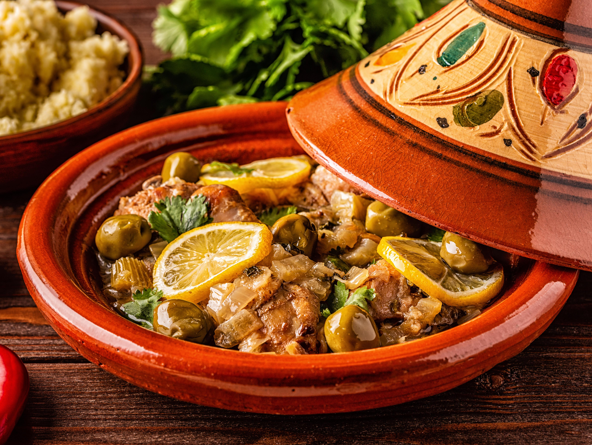

Home
Tajine

Description
Tajine is a traditional North African stew named after the unique clay pot in which it's cooked. The dish is known for its slow-cooked, deeply flavorful combinations of meat, vegetables, and aromatic spices. One of the most popular versions is chicken with preserved lemon and olives, where the chicken becomes tender and infused with the citrusy, briny flavor. The use of spices like saffron, ginger, turmeric, and cumin gives tajine its rich, warm character. While meat options vary (lamb, beef, or even fish), the cooking process remains slow and gentle, allowing all the flavors to meld together.
The beauty of tajine lies in its versatility and depth. The ingredients are typically layered in the pot, starting with onions and spices, followed by the meat, and then topped with vegetables, olives, and sometimes dried fruits like apricots or prunes for a sweet-savory combo. The conical lid of the tajine traps steam and circulates it, keeping the dish moist and flavorful. Traditionally, tajine is served with crusty bread to scoop up the rich sauce, making it a comforting and satisfying communal meal.
Ingredients
- 1 whole chicken (cut into pieces) or 4 chicken thighs
- 2 preserved lemons (quartered or sliced)
- 1 cup green or purple olives
- 1 large onion, finely chopped
- 3 cloves garlic, minced
- 1/2 bunch fresh cilantro, chopped
- 1/2 bunch fresh parsley, chopped
- 1 teaspoon ground ginger
- 1/2 teaspoon turmeric
- 1/2 teaspoon black pepper
- 1/2 teaspoon ground cumin
- Pinch of saffron threads
- Salt
- 2 tablespoons olive oil
- 1/2 cup water or chicken broth
- A handful of peeled potatoes, carrots, or other vegetables
Steps
- In a tajine or deep pot, heat olive oil over medium heat.
- Add chopped onion and garlic, and sauté until soft and fragrant.
- Stir in the spices: ginger, turmeric, pepper, cumin, saffron, and salt.
- Add the chicken pieces and coat them well in the spice mixture.
- Sprinkle in the chopped parsley and cilantro.
- Add the preserved lemons and olives, arranging them around the chicken.
- Pour in the water or broth, then cover with the tajine lid.
- Reduce the heat to low and let it simmer gently for 1 to 1.5 hours, checking occasionally to ensure it doesn't dry out.
- Add vegetables halfway through the cooking time if using.
- Once the chicken is tender and the sauce is thickened, remove from heat and serve hot with bread.